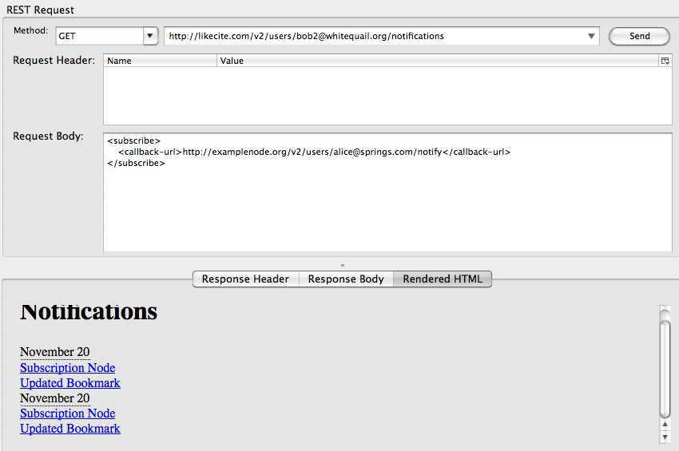
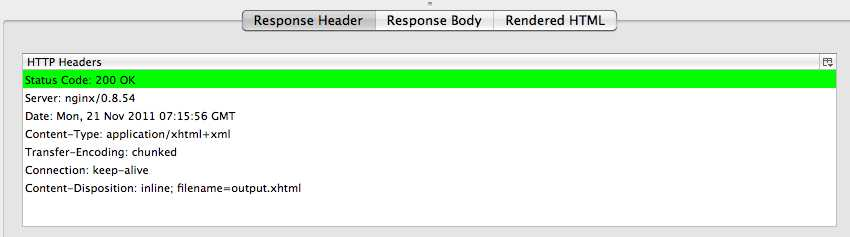
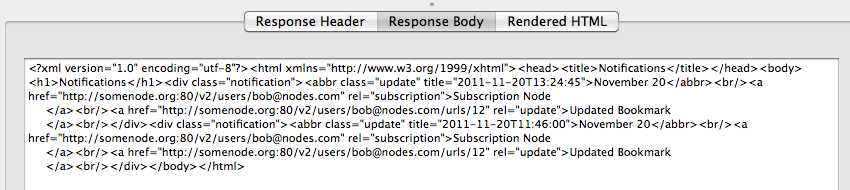
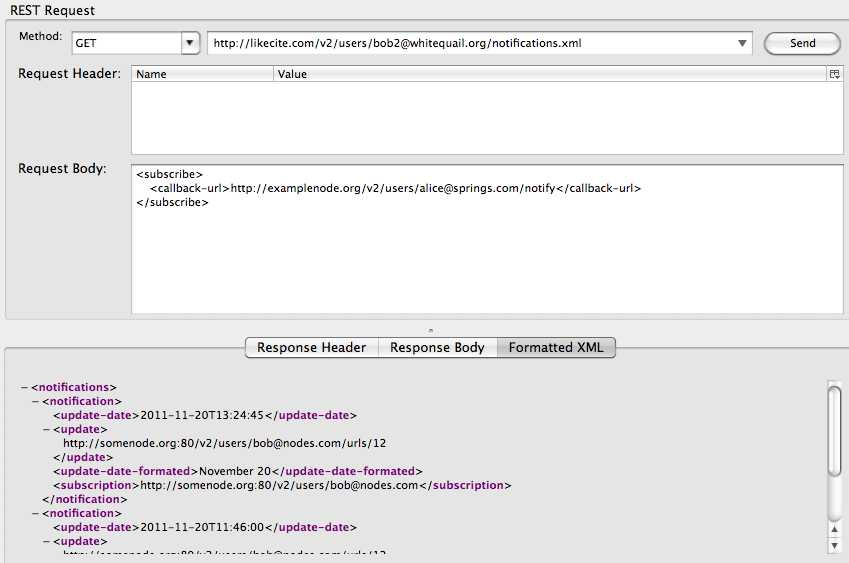
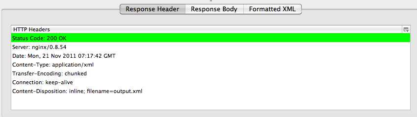

A list of user notifications can be found at this endpoint. It is presented in xhtml format by default.



Below is a "pretty-printed" representation of the returned xhtml.
<?xml version="1.0" encoding="utf-8"?>
<html xmlns="http://www.w3.org/1999/xhtml">
<head>
<title>Notifications</title>
</head>
<body>
<h1>Notifications</h1>
<div class="notification">
<abbr class="update" title="2011-11-20T13:24:45">November 20</abbr>
<br/>
<a href="http://somenode.org:80/v2/users/bob@nodes.com" rel="subscription">Subscription Node
</a>
<br/>
<a href="http://somenode.org:80/v2/users/bob@nodes.com/urls/12" rel="update">Updated Bookmark
</a>
<br/>
</div>
<div class="notification">
<abbr class="update" title="2011-11-20T11:46:00">November 20</abbr>
<br/>
<a href="http://somenode.org:80/v2/users/bob@nodes.com" rel="subscription">Subscription Node
</a>
<br/>
<a href="http://somenode.org:80/v2/users/bob@nodes.com/urls/12" rel="update">Updated Bookmark
</a>
<br/>
</div>
</body>
</html>
The xml representation for this resource can be retrieved by appending a .xml to the endpoint.


Below is a "pretty-printed" representation of the returned xml.
<?xml version="1.0" encoding="utf-8"?>
<notifications>
<notification>
<update-date>2011-11-20T13:24:45</update-date>
<update>http://somenode.org:80/v2/users/bob@nodes.com/urls/12</update>
<update-date-formated>November 20</update-date-formated>
<subscription>http://somenode.org:80/v2/users/bob@nodes.com</subscription>
</notification>
<notification>
<update-date>2011-11-20T11:46:00</update-date>
<update>http://somenode.org:80/v2/users/bob@nodes.com/urls/12</update>
<update-date-formated>November 20</update-date-formated>
<subscription>http://somenode.org:80/v2/users/bob@nodes.com</subscription>
</notification>
</notifications>